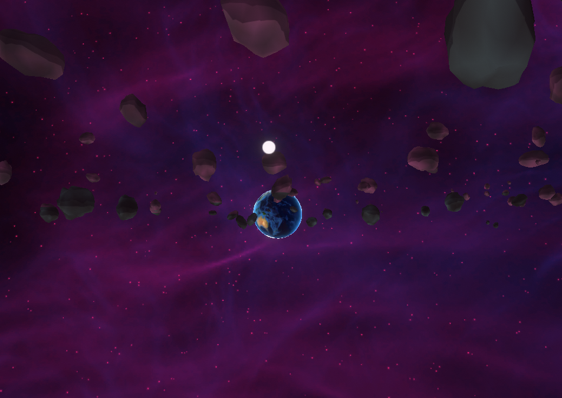
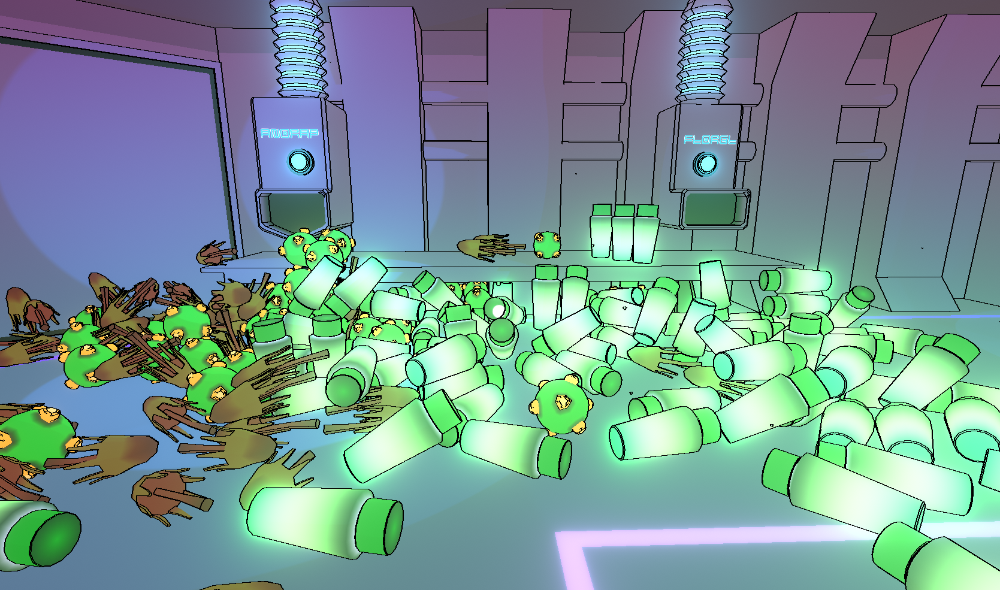

Game Overview
Game start screen.
- Game name: Sol Traveler
- Background: Lost in space on an alien spaceship, you must find your way home.
- No. of Players: Only one
- View: First person
- Genre: Adventure
- Basic rule:
- WASD - Movement
- Mouse - Look
- Left Click - Grab/Interact
- E - Interact with Held/Eat
- Space of the game: A spaceship in the universe
- Goal: Go back to the Earth
- Description: You can explore in the spaceship and learn how to operate the console, as well as making trouble in the spaceship.
Art style
The settings in the game are low-poly and minimalist. The topic colors are grey and light blue, which brings a sense of science and technology. The background music is ethereal and fantasy, which makes me feel excited during the game.
This game shows human's yearning for the universe and dependence on the Earth. Although space journey is thrilling and interesting, people still return home on the earth sooner or later.
Gameplay experience
This game is trying to simulate a space journey. It can induce immersive experience in space. I checked objects and facilities in the spaceship. I tried to pick up books and organize the bookshelf. When I opened the gate and went outside, I fell out of the spaceship, and then I had to restart the game.
The view out the spaceship.
I could get unlimited food and drink from the specific machine in the dinning room.
Food and drink could not help me to pass the game. Still, it was very interesting
to fill the spaceship with them and make a mess in the spaceship.

A messy room.
There was not instruction in the game, so I had to learn how to operate the spaceship by myself. It was a little bit difficult for me to determine the role of each control lever, because I rarely play adventure games. Fortunately, the operation was not very complicated. After turning the direction to the Earth, I just waited for the spacecraft to fly into the earth. Then, the game was over.
This is the console of the spaceship.
Pros and Cons
Pros:
- Easy to control
- Immersive experience
Cons:
- Players maybe get stuck in the corner or between the console and the ceiling due to jumping.
- No option to restart in menu. When players fall out the spaceship, they have to
quit the game to restart the game.
Menu. - No ending screen. After the spaceship entering the Earth's atmosphere, the game restarts automatically.
Recommends and Conclusion
To sum up, Sol Traveler is a space game worth playing. Its game graphics and music are fantastic. However, some operations are not convenient, and the ending is too abrupt. I suggest adding the option to restart in the menu, and making sure that the player would not get stuck when jumping between facilities. Also, adding an ending screen can make this game more complete.